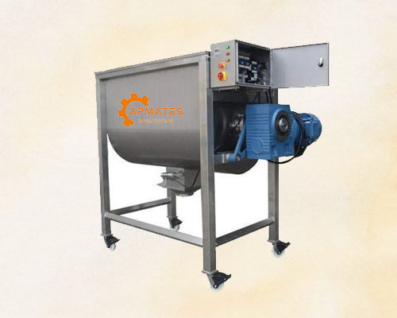

01
INDUSTRIAL MIXER

01 / INDUSTRIAL MIXING SOLUTIONS
Industrial Mixer
Industrial Mixers are used to combine and process different materials according to the requirements of manufacturing and production operations. They can support mixing applications involving powders, granules, liquids, and other compatible materials.
Mixer configuration, capacity, mixing mechanism, and construction materials can be selected according to the product characteristics and process requirements.
Versatile mixing solutions for industrial processes